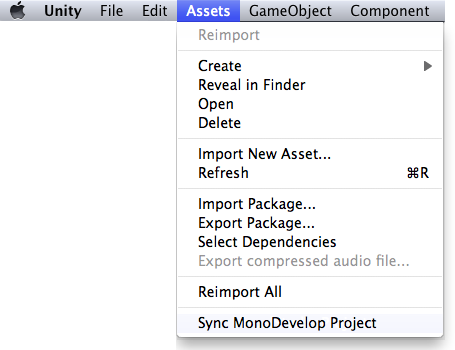

Debugger
The Unity Debugger lets you inspect your code at runtime. For example, it can help you determine when a function is called and with which values. Furthermore, it allows you to look at the value of scripts' variables at a given time while running your game. You can locate bugs or logic problems in your scripts by executing them step by step.
Unity uses the MonoDevelop IDE to debug the scripts in your game. You can debug all the languages supported by the engine (JavaScript and C#).
Note that the debugger has to load all your code and all symbols, so bear in mind that this can have a small impact on the performance of your game during execution. Typically, this overhead is not large enough to affect the game framerate.

Debugging in Unity.
On Windows, users must choose to install MonoDevelop as part of the Unity installation (selected by default).
If you haven't used MonoDevelop with your project before, synchronize your MonoDevelop project. This will open your project inside MonoDevelop. 
Set the necessary breakpoints on your scripts by clicking the lines that you want to analyze.

Launch Unity or your player.
- Unity: Ensure you have "Editor Attaching" checked in the Preferences window.
- Players: Ensure that you have built your player with the "Development build" and "Allow script debugging" options enabled.
Open your project in MonoDevelop.
- In MonoDevelop, click the Attach button in the toolbar, or choose Attach from the Run menu.
- From the dialog that appears, choose the item you wish to debug.
- Notes:
- Currently supported debugging targets: Unity editors, desktop standalone players, Android, iOS and Tizen players
- If your player is set not to run in the background (the default), you may need to focus your player for a few seconds in order for it to appear in the list.
- Android, iOS and Tizen players need to have networking enabled when script debugging is enabled. All players need to be on the same network subnet as the computer running MonoDevelop.
- Script debugging only works with Mono as Scripting Backend. IL2CPP does not support script debugging. However, you can debug the native code generated by IL2CPP.

* When you enter play mode, your script code will execute in the debugger.
* When a breakpoint occurs, script execution will stop, and you will be able to use MonoDevelop to step over, into, and out of your script methods, inspect your variables, examine the call stack, etc.
* _Note:_ When you're done debugging a toplevel method (e.g. `Update()`), or you just want to jump to the next breakpoint, you will experience better debugger performance by using the **Continue** command instead of stepping out or over the end of your function.


- When you're done debugging, click the Detach or Stop buttons in the toolbar, or choose Detach or Stop from the Run menu.
Hints.
- If you add a watch to the _this_ object, you can inspect the internal values (position, scale, rotation...) of the GameObject to which the script is attached.
iOS USB debugging instructions
With Unity 5.0 it's now possible to use USB for script debugging when targetting iOS devices. It offers more stable and responsive connection than Wi-Fi.
- Attach iOS device to your PC using USB cable (the same requirement as for USB profiling).
- Hit build & run in the Unity editor.
- When the application builds, installs & launches via Xcode, click Stop in Xcode.
- Manually find & launch your application on your iDevice. (Note: if the application is launched via Xcode you won't be able to resume after reaching a breakpoint).
- When the app is running on the device, switch to MonoDevelop and click on the attach icon in the debugging toolbar. Select your device from the available instances list. Devices that are supported by USB debugging will be marked with "Unity USB".
iOS Wi-Fi debugging instructions
In addition to the instructions described above, Unity iOS applications require some additional steps for successful debugging:
- Attach iOS device to your WiFi network (the same requirement as for remote profiling).
- Hit build & run in the Unity editor.
- When the application builds, installs & launches via Xcode, click Stop in Xcode.
- Manually find & launch your application on your iDevice. (Note: if the application is launched via Xcode you won't be able to resume after reaching a breakpoint).
- When the app is running on the device, switch to MonoDevelop and click on the attach icon in the debugging toolbar. Select your device from the available instances list (if there are several instances shown, then select the bottom one).
Note: If you have GSM (3G, 4G (LTE)) enabled, you might need to go into flight mode and turn on WiFi to connect properly as you might not be in the same subnet.